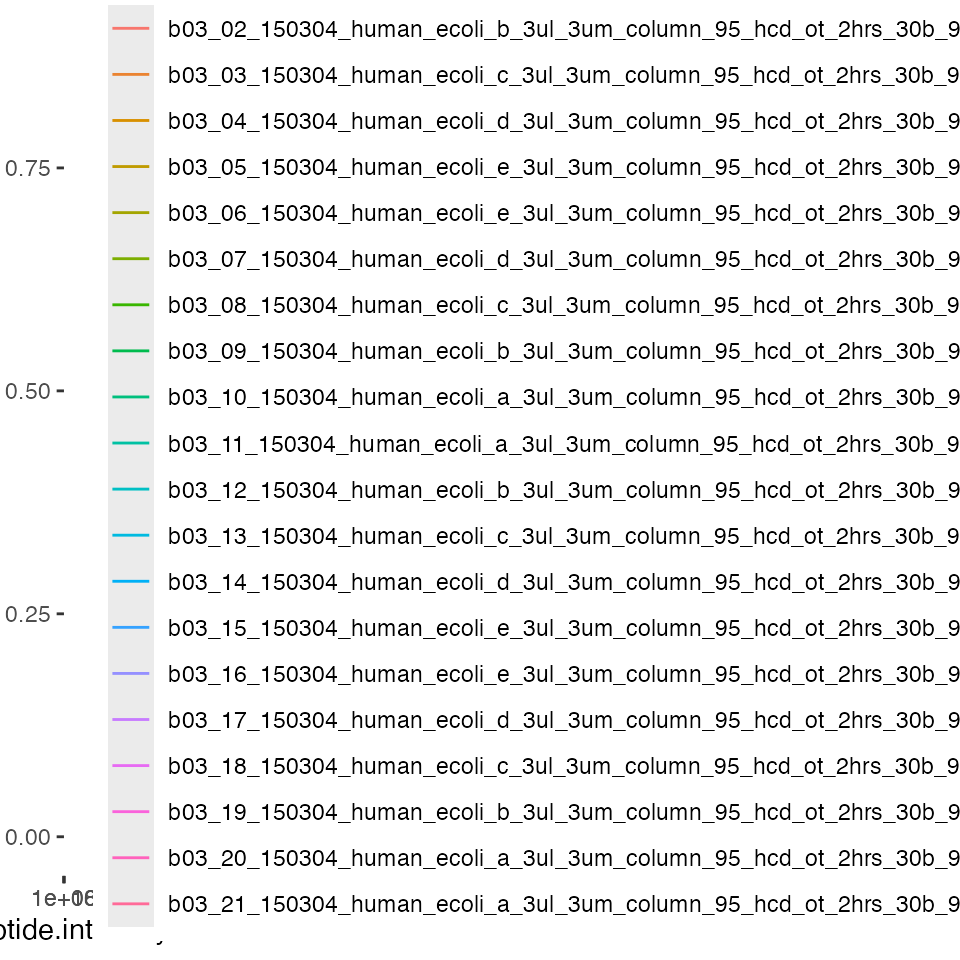
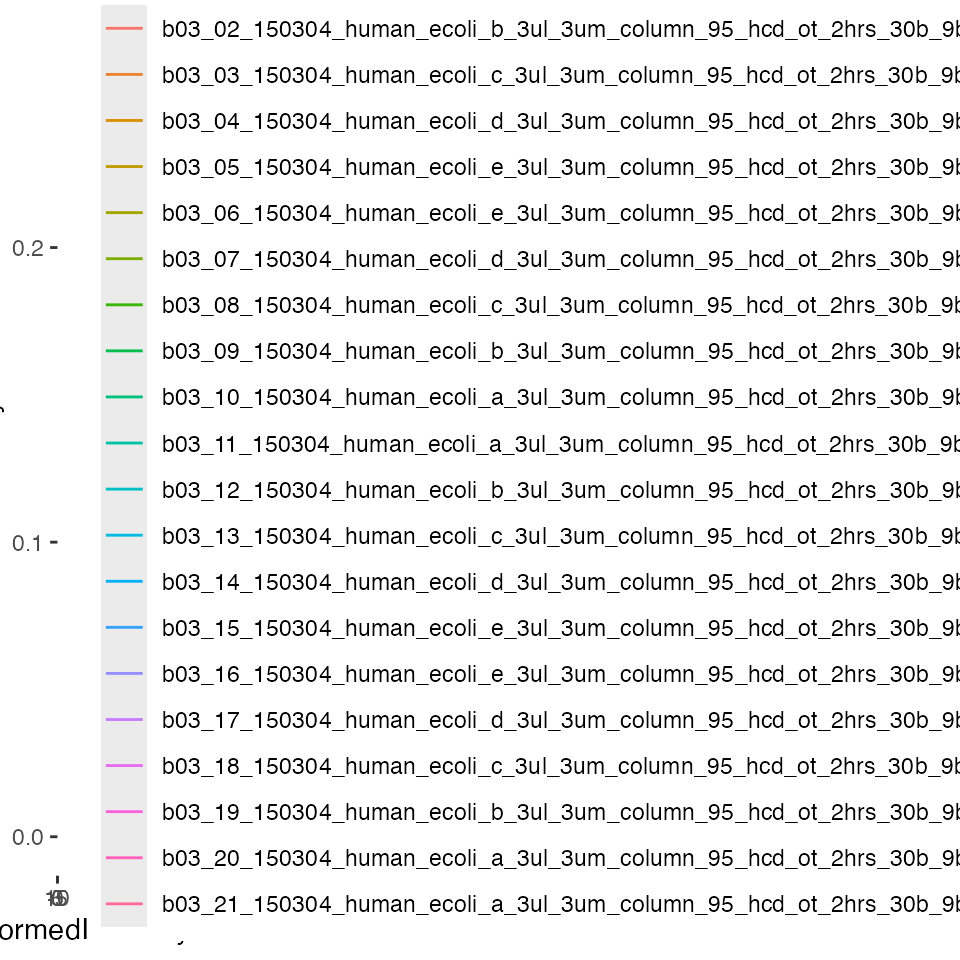
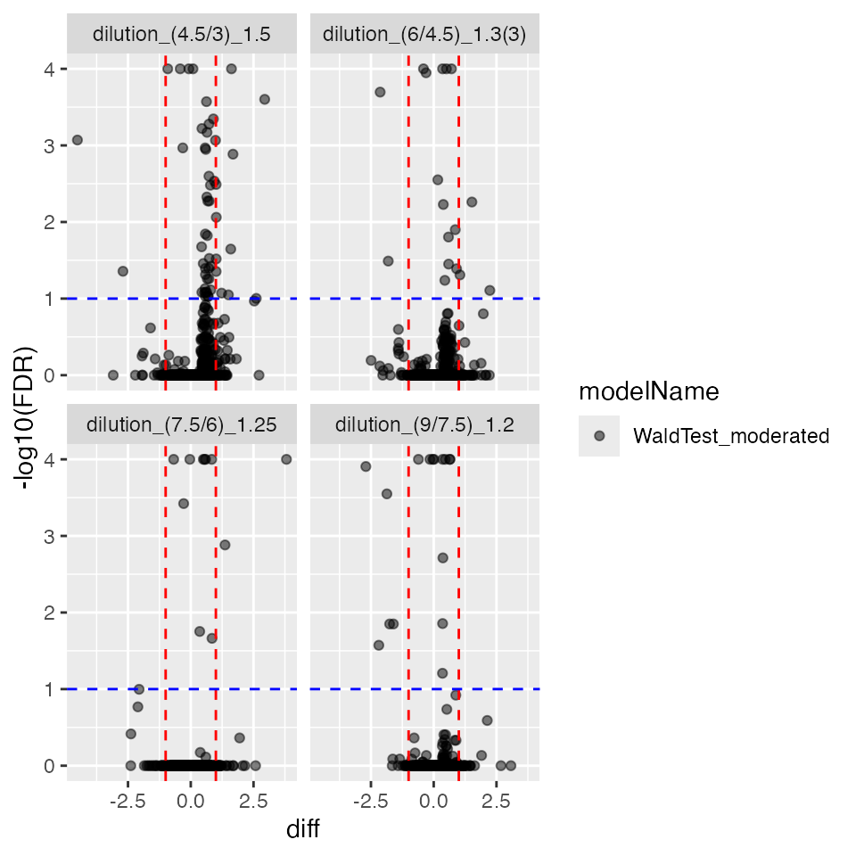

vignettes/Benchmark_rlm.Rmd
Benchmark_rlm.RmdPlease download and install the prolfquadata package
from github
conflicted::conflict_prefer("filter", "dplyr")Decide if you work with all data or for speedup with subset of data:
SUBSET <- FALSE
SUBSETNORM <- TRUE
SAVE <- TRUEWe start by loading the IonStar dataset and the annotation from the
prolfquadata package. The method
add_annotation adds the annotation to the data.
datadir <- file.path(find.package("prolfquadata") , "quantdata")
inputMQfile <- file.path(datadir,
"MAXQuant_IonStar2018_PXD003881.zip")
inputAnnotation <- file.path(datadir, "annotation_Ionstar2018_PXD003881.xlsx")
mqdata <- list()
mqdata$data <- prolfqua::tidyMQ_Peptides(inputMQfile)
length(unique(mqdata$data$proteins))## [1] 5295
mqdata$config <- prolfqua::create_config_MQ_peptide()
annotation <- readxl::read_xlsx(inputAnnotation)
res <- prolfqua::add_annotation(
mqdata$data,
annotation,
fileName = "raw.file"
)The setup_analysis asserts that all columns specified in
the configruation are present in the data. For more details about the
prolfqua configuration see the vignette “Creating
Configurations”.
mqdata$config$table$factors[["dilution."]] = "sample"
mqdata$config$table$factors[["run_Id"]] = "run_ID"
mqdata$config$table$factorDepth <- 1
mqdata$data <- prolfqua::setup_analysis(res, mqdata$config)First we remove all contaminant, decoy proteins from the list, than we remove 0 intensity values, then filter for 2 peptides per protein.
lfqdata <- prolfqua::LFQData$new(mqdata$data, mqdata$config)
lfqdata$data <- lfqdata$data |> dplyr::filter(!grepl("^REV__|^CON__", protein_Id))
sr <- lfqdata$get_Summariser()
lfqdata$remove_small_intensities()
sr <- lfqdata$get_Summariser()
sr$hierarchy_counts()## # A tibble: 1 × 3
## isotope protein_Id peptide_Id
## <chr> <int> <int>
## 1 light 4777 30478We will normalize the data using the ‘LFQTransformer’ class. Since we
know that the Human proteins are the Matrix in the experiment we will
normalize the data using HUMAN proteins only. To this task we subset the
dataset by filtering for HUMAN proteins only and then use the
LFQDataTransformer to normalize the data.
tr <- lfqdata$get_Transformer()
subset_h <- lfqdata$get_copy()
subset_h$data <- subset_h$data |> dplyr::filter(grepl("HUMAN", protein_Id))
subset_h <- subset_h$get_Transformer()$log2()$lfq
lfqdataNormalized <- tr$log2()$robscale_subset(lfqsubset = subset_h, preserveMean = FALSE )$lfqThe figures below show the intensity distribution before and after normalization.
before <- lfqdata$get_Plotter()
before$intensity_distribution_density()
after <- lfqdataNormalized$get_Plotter()
after$intensity_distribution_density()
Create a sample of N proteins to speed up computations of models and contrasts.
if (SUBSET) {
N <- 200
mqdataSubset <- lfqdata$get_sample(size = N, seed = 2020)
lfqNormSubset <- lfqdataNormalized$get_sample(size = N, seed = 2020)
lfqNormSubset$hierarchy_counts()
} else {
mqdataSubset <- lfqdata$get_copy()
lfqNormSubset <- lfqdataNormalized$clone()
lfqNormSubset$hierarchy_counts()
}## # A tibble: 1 × 3
## isotope protein_Id peptide_Id
## <chr> <int> <int>
## 1 light 4777 30478
df.residual.rlm <- function(object, ...) {
return( sum(object$w) - object$rank)
}
sigma.rlm <- function(object, ...) {
sqrt(sqrt(sum(object$w * object$resid^2) / (sum(object$w) - object$rank)))
}
rlmmodel <- "~ dilution."
rlmmodel <- paste0(lfqNormSubset$config$table$get_response() , rlmmodel)
lfqNormSubset$config$table$hierarchyDepth <- 1
modelFunction <- prolfqua::strategy_rlm( rlmmodel, model_name = "Model")
mod_rlm_ProtLevel <- prolfqua::build_model(lfqNormSubset$data, modelFunction)
mod_rlm_ProtLevel$get_anova()## # A tibble: 4,639 × 10
## protein_Id isSin…¹ nrcoef factor Df Sum.Sq Mean.Sq F.value Pr..F. FDR.P…²
## <chr> <lgl> <int> <chr> <dbl> <dbl> <dbl> <dbl> <dbl> <dbl>
## 1 sp|A0AVT1|… FALSE 5 dilut… 4 0.533 0.133 0.414 0.798 1.00
## 2 sp|A0FGR8|… FALSE 5 dilut… 4 0.0711 0.0178 0.0213 0.999 1.00
## 3 sp|A0MZ66|… FALSE 5 dilut… 4 0.581 0.145 0.224 0.925 1.00
## 4 sp|A1L0T0|… FALSE 5 dilut… 4 0.386 0.0965 0.246 0.910 1.00
## 5 sp|A1X283|… FALSE 5 dilut… 4 0.410 0.102 0.522 0.720 1.00
## 6 sp|A2RRP1|… FALSE 5 dilut… 4 0.118 0.0296 0.314 0.867 1.00
## 7 sp|A3KN83|… FALSE 5 dilut… 4 1.27 0.317 0.791 0.539 1.00
## 8 sp|A4D1E9|… FALSE 5 dilut… 4 0.825 0.206 0.693 0.599 1.00
## 9 sp|A5PLL7|… FALSE 5 dilut… 4 0.834 0.208 0.115 0.976 1.00
## 10 sp|A5YKK6|… FALSE 5 dilut… 4 0.774 0.194 0.244 0.913 1.00
## # … with 4,629 more rows, and abbreviated variable names ¹isSingular,
## # ²FDR.Pr..F.
mod_rlm_ProtLevel$anova_histogram()$plotOnce models are fitted contrasts can be computed. The R code below defines all possible contrasts among conditions for the ionstar dataset.
DEBUG <- FALSE
Contrasts <- c(
"dilution_(9/3)_3" = "dilution.e - dilution.a",
"dilution_(9/4.5)_2" = "dilution.e - dilution.b",
"dilution_(9/6)_1.5" = "dilution.e - dilution.c",
"dilution_(9/7.5)_1.2" = "dilution.e - dilution.d",
"dilution_(7.5/3)_2.5" = "dilution.d - dilution.a",
"dilution_(7.5/4.5)_1.6(6)" = "dilution.d - dilution.b",
"dilution_(7.5/6)_1.25" = "dilution.d - dilution.c",
"dilution_(6/3)_2" = "dilution.c - dilution.a",
"dilution_(6/4.5)_1.3(3)" = "dilution.c - dilution.b",
"dilution_(4.5/3)_1.5" = "dilution.b - dilution.a"
)
tt <- Reduce(rbind, strsplit(names(Contrasts),split = "_"))
tt <- data.frame(tt)[,2:3]
colnames(tt) <- c("ratio" , "expected fold-change")
tt <- tibble::add_column(tt, contrast = Contrasts, .before = 1)
prolfqua::table_facade(
tt,
caption = "All possible Contrasts given 5 E. coli dilutions of the Ionstar Dataset", digits = 1)| contrast | ratio | expected fold-change | |
|---|---|---|---|
| init | dilution.e - dilution.a | (9/3) | 3 |
| X | dilution.e - dilution.b | (9/4.5) | 2 |
| X.1 | dilution.e - dilution.c | (9/6) | 1.5 |
| X.2 | dilution.e - dilution.d | (9/7.5) | 1.2 |
| X.3 | dilution.d - dilution.a | (7.5/3) | 2.5 |
| X.4 | dilution.d - dilution.b | (7.5/4.5) | 1.6(6) |
| X.5 | dilution.d - dilution.c | (7.5/6) | 1.25 |
| X.6 | dilution.c - dilution.a | (6/3) | 2 |
| X.7 | dilution.c - dilution.b | (6/4.5) | 1.3(3) |
| X.8 | dilution.b - dilution.a | (4.5/3) | 1.5 |
relevantContrasts <- c("dilution_(9/7.5)_1.2",
"dilution_(7.5/6)_1.25",
"dilution_(6/4.5)_1.3(3)",
"dilution_(4.5/3)_1.5" )
tt <- Reduce(rbind, strsplit(relevantContrasts,split = "_"))
tt <- data.frame(tt)[,2:3]
colnames(tt) <- c("ratio" , "expected fold-change")
tt <- tibble::add_column(tt, contrast = Contrasts[names(Contrasts) %in% relevantContrasts], .before = 1)
prolfqua::table_facade(tt, caption = "Contrasts used for benchmark.", digits = 1)| contrast | ratio | expected fold-change | |
|---|---|---|---|
| init | dilution.e - dilution.d | (9/7.5) | 1.2 |
| X | dilution.d - dilution.c | (7.5/6) | 1.25 |
| X.1 | dilution.c - dilution.b | (6/4.5) | 1.3(3) |
| X.2 | dilution.b - dilution.a | (4.5/3) | 1.5 |
contrProtRLMModerated <- prolfqua::ContrastsModerated$new(contrProt_RLM)
contrProtRLMModerated$get_Plotter()$volcano()$FDR
## [1] 4756
ttd <- prolfqua::ionstar_bench_preprocess(contrProtRLMModerated$get_contrasts())
benchmark_ProtRLMModerated <- prolfqua::make_benchmark(
ttd$data,
model_description = "med. polish and rlm moderated",
model_name = "prolfqua_rlm_mod")
prolfqua::table_facade(
benchmark_ProtRLMModerated$smc$summary,
caption = "Nr of proteins with Nr of not estimated contrasts.",
digits = 1)| nr_missing | protein_Id |
|---|---|
| 0 | 4479 |
| 1 | 13 |
| 2 | 118 |
| 3 | 46 |
| 4 | 100 |
benchmark_ProtRLMModerated$plot_ROC(xlim = 1)
benchmark_ProtRLMModerated$plot_FDRvsFDP()